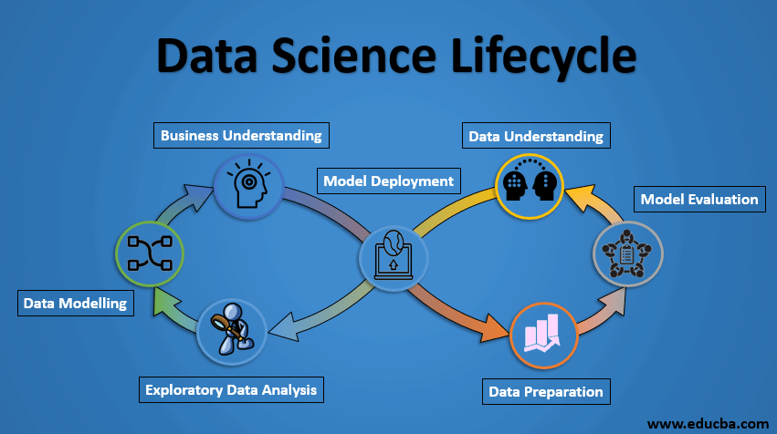

Data science
Data science is the field of study that combines domain
expertise, programming skills, and knowledge of
mathematics and statistics to extract meaningful insights
from data. Data science practitioners apply machine learning
algorithms to numbers, text, images, video, audio, and more
to produce arifienChelligence (Al) systems to perform tasks
that ordinarily kequire human intelligence. In turn, these
systems generate insights which analysts and business
users can translate into tangible business value.
Why Data Science is Important?
More and more companies are coming to realize
the importance of data scleade, Al, and machine
learning. Regardless of industry or size,
organizations.that wish to remain competitive in the
age of big data need to efficiently develop and
implement data science capabilities or risk being
eft behind.
Data Science is primarily used to make decisions and
predictions making use of predictive causal analytics,
prescriptive analytics (predictive plus decision science) and
machine learning.
Predictive causal analytics - If you want a model that can
predict the possibilities of a particular event in the future, you
need to apply predictive causal analytics. Say, if you are
providing money on credit, then the probability of customers
Machine learning for making predictions
If you have transactional data of a finance company
and need to build a model to determine the future
trend, then machine learning algorithms are the best
bet. This falls under the paradigm of supervised
learning. It is called supervised because you already
have the data based on which you can train your
machines, For example, a fraud detection model can
be trained using a historical record of fraudulent
purchases.
Business Intelligence (BI) vs. Data Science
Business Intelligence (BI) basically analyzes the previous data to find
hindsight and insight to describe business trends. Here BI enables
you to take data from external and internal sources, prepare it, run
queries on it and create dashboards to answer questions like
quarterly revenue analysis or business problems. BI can evaluate the
impact of certain events in the near future.
Data Science is a more forward-looking approach, an exploratory
way with the focus on analyzing the past or current data and
predicting the future outcomes with the aim of making informed
decisions.
Life Cycle Of Data Science

1.Business Understanding
Business Understanding plays a key role in success of any
project. We have all the technology to make our lives easy
but still with this tremendous change a success of any
project depends on the quality of questions asked for the
dataset.
Every domain and business work with a set of rules and
goals. In order to acquire the correct data, we should be
able to understand the business. Asking questions about
dataset will hep in narrowing down to correct data
acquisition.
2.Data Collection
As it is a well-known fact that there is no Data Science without Data. So,
data serves important ingredient for making any Data Science project. Now
the question comes where to get the data from. Data could be from various
sources which could be - logs from webservers, data from online
repositories, data from databases, social media data, data in excel sheet, so
in short data can come from any source Everywhere data is there.
Newspaper, journals, online, websites, everything is made up of data only. If
right questions have been asked in prior step then this becomes an easy
step to narrow down to correct data sources.
3.Data Preparation
Data may be or may not be in required format. To perform any analytical step
on the data it needs to be in certain format. It could also be said that data
needs to be cleaned before processing any further, Thus, this step is also
known as Data Cleaning or Data Wrangling
Data acquired in previous step might not give clear analytical picture or
patterns in the data. So, to understand this data needs to be structured and
cleaned. Might be data is obtained from different sources but for analysis data
need to be clubbed together from different sources. This is also referred as
structuring the data. Apart from this data might have missing values which will
cause obstruction in analysis and model building.
4.Data. Modelling
This stage seems to be most interesting one to
almost all of the data scientists Many people call it
"a stage where magic happens". But remember
magic can happen only if you have correct props
and technique: In terms of data science "Data" is
that prop and data preparation is that technique.
So before jumping to this step make sure to spend
sufficient amount of time in prior steps.
5.Interpreting Data
This is the last step of any Data Science project and also the most important step.
Execution of this step should be as good as a layman should be able to
understand the outcome of the project. The predictive power of the model lies in
oders
its ability to generalise.
Actionable insights from the model shows how Data Science has the power of
doing predictive analytics and prescriptive analytics. This give us the power to
learn how to repeat positive result, or how to prevent the negative result.
Last but not the least, visualization of findings should be done. It should be in line
with business questions. It should be meaningful to the organisation and the
stakeholders. Presentation through visualization should be such that it should
thissensation in the audience.
Examples And applications
- Banking is one of the biggest applications of Data Science
- Data Science has played a key role in automating various financial tasks
- In the health-care industry, data science is making great leaps. The various industries in health-care making use of data science
- E-commerce and retail industries have been hugely benefitted by data science.
- Another important application of data science is transport. In the transportation sector, Data Science is actively making its mark in making safer driving environments for the drivers.
- Predictive Analytics is the process of using computational techniques to predict future events.